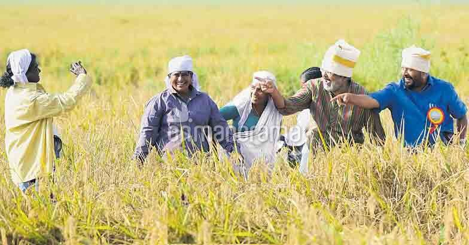
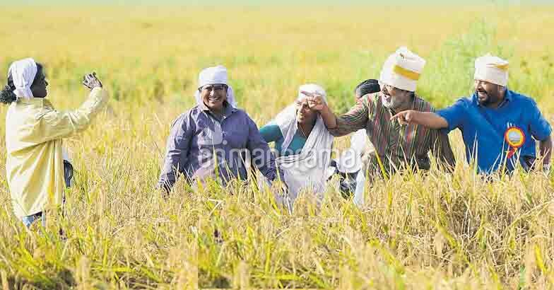
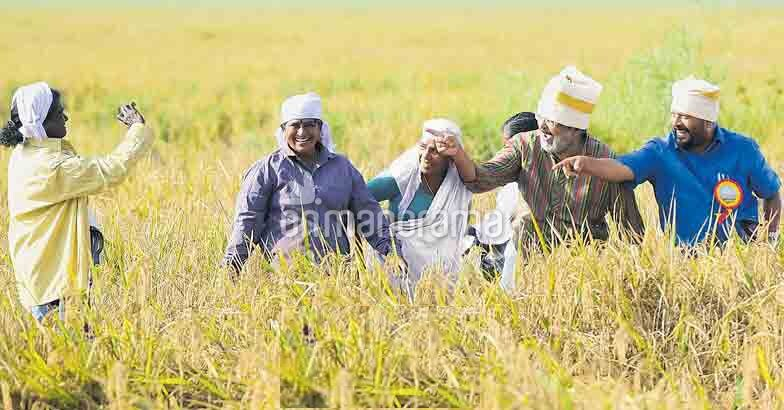

A comprehensive resource on soil distribution, best crops, and farming techniques in Kerala.
Soil Distribution in Kerala
Kerala's soil is rich and diverse: Laterite Soil (ideal for coconut and rubber), Alluvial Soil (best for rice and banana), and Sandy Soil (suitable for spices like black pepper and cardamom).
Experts recommend integrating traditional farming methods with modern technology to sustain Kerala’s rich agricultural heritage.
